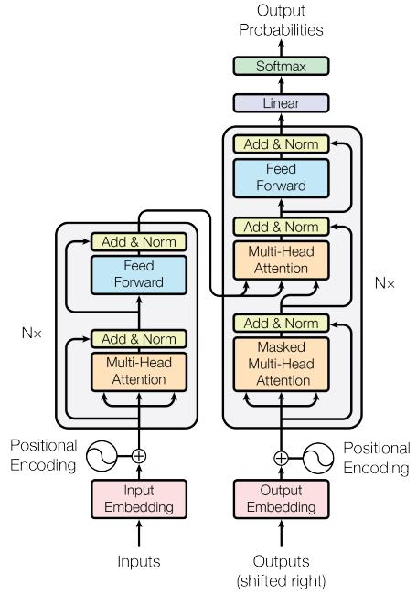
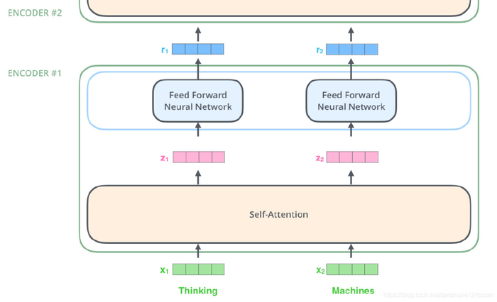
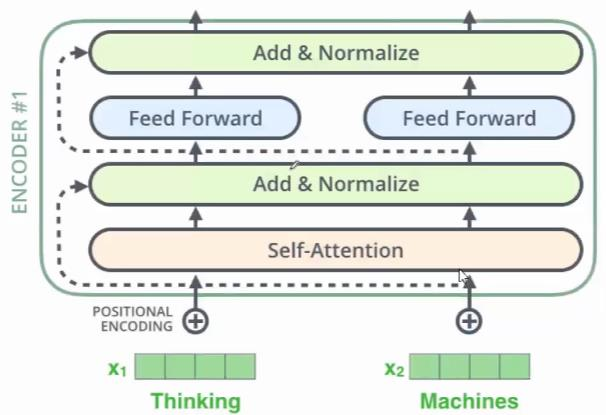
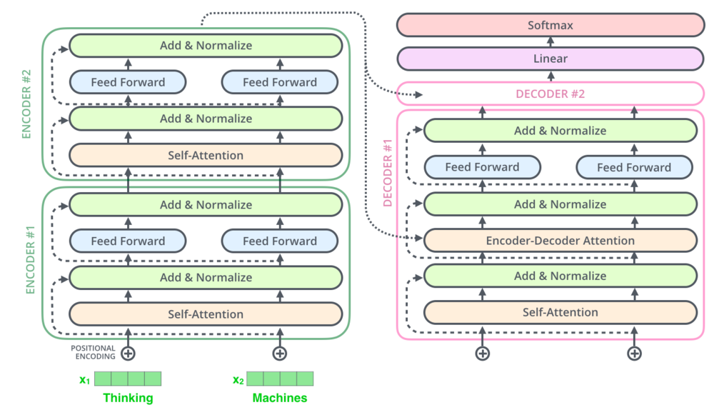

Transformer 和 Self-Attention
Transformer 和 Self-Attention
the Transformer is the first transduction model relying entirely on self-attention to compute representations of its input and output without using sequencealigned RNNs or convolution.
RNN的局限
在$Transformer$之前$encoder-decoder$的模型是基于$y$来实现的，但$RNN$有局限性：
1、$h_t=tanh(W_{hh}h_{t-1}+W_{xh}x_t+b_{h})$递归模型导致的梯度消失（$GRU$和$LSTM$优化了这个问题）
2、$RNN$中$t$时间步的状态计算需要依赖$t-1$时间步，极大限制了模型的并行能力
3、尽管$GRU$和$LSTM$缓解了长期记忆信息容易丢失的问题，但某些情况下效果甚微
Tranformer
一、优势
作者引用$Attention$机制得到了一下的优化：
1、忽略了序列中的位置关系
2、拥有更好的并行能力
二、架构

1.$Encoder$
$Embedding$向量加上$Position\ Encoding$得到输入，然后经过n次$Basic\ Block\ 1$。
$Basic\ Block\ 1$：分为$Attention$层和前馈层，每层的最后需要加上$Residual\ Connection$和$Layer\ Norm$
2.$Decoder$
第一次输入的是前缀信息，之后的就是上一次生成的$Embedding$加上位置编码，然后经过n次$Basic\ Block\ 2$
$Basic\ Block\ 2$：分为$Masked\ Attention$层，$cross\ Attention$层和前馈层，同样每层最后有残差连接和归一
3.$Output$
通过一层$Linear$和$Softmax$得到最终结果
三、$Encoder$模块

可以看到$encoder$模块将输入$x$通过$self-attention$层，得到新的$z$，之后通过前馈层得到新的$r$。
值得质疑的是，$attention$层是所有的输入向量共同参与的，也就是说$x$之间通过某种信息的杂糅和交换，得到了中间向量$z$。而前馈层是割裂开的。
1. self-attention
$self-attention$即$taget=source$时的$attetion$
假如$input$给了$Encoder$模块2个单词$x_1,x_2$，$self-attention$会分别将每个$x$转换成$3$个向量，分别叫做$q\ k\ v$。那么这种向量与新向量的转换，最简单操作就是乘以矩阵了。所以我们需要三个不同的矩阵$W_Q\ W_K\ W_v$
$$
\begin{align}
q_i = x_iW_Q\\
k_i = x_iW_K\\
v_i = x_iW_V
\end{align}
$$
注意到，三个矩阵的参数是共享的。也就是说，单词与单词之间已经发生了信息的交换。
有了$q\ k\ v$之后，怎么得到$z$呢？计算过程是这样的：
$$
\begin{align}
z_1=\theta_{11}v_1+\theta_{12}v_2\\
z_2=\theta_{21}v_1+\theta_{22}v_2
\end{align}
$$
其中
$$
\begin{align}
[\theta_{11},\theta_{12}] &= \text{softmax}\left(\frac{q_1k_1^T}{\sqrt{d_k}},\frac{q_1k_2^T}{\sqrt{d_k}}\right) \\
[\theta_{21},\theta_{22}] &= \text{softmax}\left(\frac{q_2k_1^T}{\sqrt{d_k}},\frac{q_2k_2^T}{\sqrt{d_k}}\right)
\end{align}
$$
进一步，用矩阵表示我们得到了
$$
Attention(Q,K,V)=Softmax(\frac{QK^T}{\sqrt d_k})V
$$
上述除以$\sqrt d_k$的原因是防止维度过高时，$QK^T$过大导致梯度消失。
2.Multiple-headed attention
$$
\begin{align}
MultiHead(Q,K,V)=Concat(head_1, …,head_n)W^O\\
where \ head_i = Attention(Q_i,K_i,V_i)
\end{align}
$$
好处：多个$Q\ K\ V$带来了更高的自由度，更丰富的层次。
额外步骤：将多个版本的$z$拼接成一个长向量，然后用一个全连接网络，得到一个短$z$
3.细节1：词向量embedding输入
$Encode$r输入的是单词$x$的$embedding$，通常有两种选择：
- 使用$Pre-trained$的$embeddings$并固化
- 对其进行随机初始化（当然也可以选择$Pre-trained$的结果），但设为$Trainable$。这样不断地对$embeddings$进行改进。 即$End2End$训练方式。
$Transformer$选择后者。
4.细节2：位置编码
背景：$Transformer$中单词之间的相对位置信息时缺失的。
操作：输入的时候，不仅有单词向量$x$，还要加上$Positional\ Encoding$，即输入模型的整个$Embedding$是$Word\ Embedding$与$Positional\ Embedding$直接相加之后的结果。
论文中位置编码运用的是
$$
\begin{align}
P E_{(pos,2i)} = sin(pos/10000^{2i/d_{model}} )\\
P E_{(pos,2i+1)} = cos(pos/10000^{2i+1/d_{model}} )
\end{align}
$$
物理意义：Positional Encoding两两点击代表相关性。其特点是Encoding向量的点积值对称，随着距离增大而减小。
5.细节3：skip connection和Layer Normalization
$Encoder$和$Decoder$每个子模块实际的输出为：
$$
LayerNorm(x+Sublayer(x))
$$

在$Selft-Attention$的前后和每一个$Feed Forward$前后都用了跳跃层
如上图所示，同时，还用了一种新的$Layer\ Normalize$，不是常用的$Batch\ Normalize$。是一种正则化的策略，避免网络过拟合。
四、Decoder模块
Decoder与encoder中层的主要不同：
1、$Decoder\ Sublayer-1$使用的是$Masked\ self-Attention$，防止了模型看到预测答案
2、$Sublayer-2$是一个$Cross\ attetion$
1.$Masked$输入端
模型训练阶段：
- $Decoder$的初始输入：训练集的标签$Y$，并且需要整体右移（$Shifted\ Right$）一位
- $Shifted\ Right$的原因：$T-1$时刻需要预测$T$时刻的输出，所以$Decoder$的输入需要整体后移一位
什么是Mask?
掩码（Mask）指对某些值进行掩盖。Transformer中涉及两种掩码：padding mask 和 sequence mask。前者源于scaled dot-product的需要，而后者仅出现在Decoder的self-attetion中。
-
Padding mask
不同的批次中输入序列的长度不同，我们需要将这些序列对齐。具体来说，就是填充短序列的末端，更具体一点，就是把需要填充的位置上的值设置为负无穷，这样经过Softmax之后，这个位置的概率趋近0。我们的Padding mask是一个boolean张量，值为False的地方就是被处理的位置。
-
Sequence mask
为了使Decoder无法提前知道未来时间步的信息，意味这我们在时间t时，所有的信息来源均只能依赖于t之前的输出。具体而 言，我们需要一个上三角矩阵。
2.Cross-attention层
这一层的输入不仅有前一层的输出x（作为Q）, 还有encoder的输出（作为K、V）。
3. Decoder的输出

从上图可以看出，Decoder和Encoder唯一的区别就是多了一个Encode-Decode注意力层，然后最后一层接了个linear+softmax层，损失函数就是交叉熵损失。
Decoder的最后一个部分是过一个linear layer将decoder的输出扩展到与vocabulary size一样的维度上。经过softmax 后，选择概率最高的一个word作为预测结果。